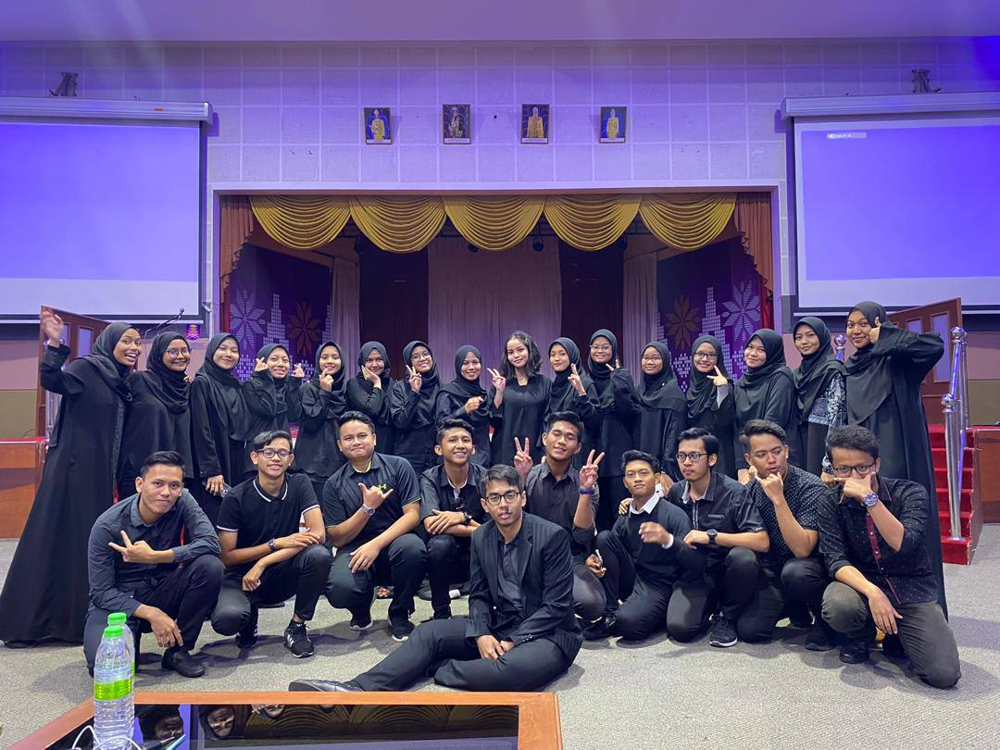

Universiti Teknologi MARA (UiTM) Cawangan Kelantan Kampus Kota Bharu (Mar 2022 - Now) Bachelor Degree in Business Administration (Hons.) Islamic Banking, 3.53/4.00
Universiti Teknologi MARA (UiTM) Cawangan Terengganu Kampus Dungun (Jul 2019 - Feb 2022) Diploma in Accountancy, 3.67/4.00 Dean's Award - Session 1 2019/2020, February 2019, July 2020, Session 2 2021-2022, February 2021, July 2021 Vice-President of Association Secretariat of Accounting (ALFA) President of Bureau Protocol and Security of High Council Association UiTM Dungun
Sekolah Menengah Agama Al-Falah Kemaman, Terengganu (Jan 2014 - Nov 2018) SPM 2018 - 7A, 3B, 1C PT3 2016 - 6A, 3B, 2C School President 2018 National Representative of Terengganu in Public Speaking National Representative of Terengganu in Poems Competition Champion of Taekwondo Korea Open Championship 2017

